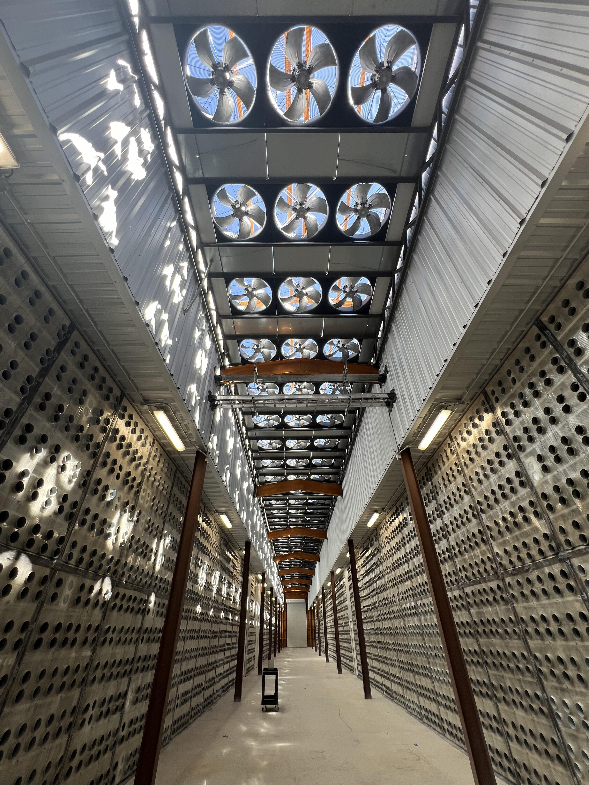
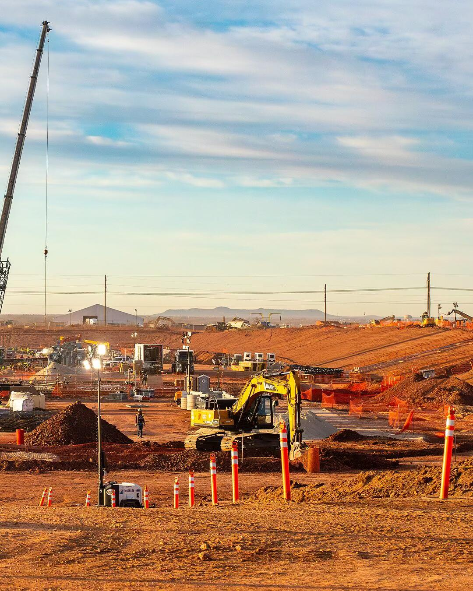

Site, power and physical systems.
The operating foundation for high-density Bitcoin compute.
- Site & Power Evaluation
- Transformers & Distribution
- Containers / Data Halls
- Networking & Site Security
TerraHash Energy approaches Bitcoin mining as an integrated energy and compute infrastructure system.
Power availability, mining hardware, thermal management, operating intelligence and flexible load strategy are designed as one coordinated platform — connecting physical energy assets with productive Bitcoin network compute.

Every layer of a mining operation depends on the layer beneath it. TerraHash’s ecosystem framework starts with site and electrical conditions, then connects hardware, thermal systems, fleet operations and hashrate intelligence into a unified operating model.
The operating foundation for high-density Bitcoin compute.
Deployment, reliability and maintainability across the machine lifecycle.
Mining load can be managed around power conditions and operating priorities.
Connect machine-level data with fleet and site-level operating visibility.

Site selection, electrical architecture and thermal design influence the economics of every terahash produced. The objective is not simply to install machines, but to create an operating environment where power, hardware and controls work together.
Transformers, switchgear and distribution designed for dense, continuous compute loads.
Airflow, cooling and heat rejection engineered around hardware density and site conditions.
Machine health, maintenance workflows and uptime management across the ASIC fleet.
Operating controls that connect energy availability, load decisions and hashrate output.
The ecosystem extends beyond mining without losing the energy-first identity: renewable power supports compute, compute produces network value, and downstream digital layers provide access and utility.
Wallet connectivity and NEXUS are positioned downstream of the mining stack, extending ecosystem access without replacing TerraHash Energy’s core identity as an energy and compute infrastructure platform.
A user-controlled wallet layer can provide access to Bitcoin and supported ecosystem assets while keeping custody and transaction authorization with the user.
NEXUS represents the strategic ecosystem layer for on-chain market access, liquidity connectivity and future digital-asset applications.
A vertically connected ecosystem built from physical energy infrastructure outward — designed to connect renewable power, Bitcoin compute and downstream digital access within one coherent platform.